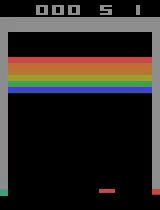

Q-learning is a reinforcement learning (RL) algorithm that is the basis for deep Q networks (DQN), the algorithm by Google DeepMind that achieved human-level performance for a range of Atari games and kicked off the deep RL revolution starting in 2013-2015.
We begin with some historical context, then provide an overview of value function methods / Q-learning, and conclude with a discussion of DQN.
If you want to skip straight to code, the implementation of DQN that we used to train the agent playing Atari Breakout below is available here.

If you watch the video long enough, you’ll see the agent has learned a strategy that favors breaking bricks at the edges so the ball “breaks out” to the upper side, resulting in a cascade of points.
Historical context
The theories that underpin today’s reinforcement learning algorithms were developed decades ago. For example, Watkins developed Q-learning, a value function method, in 1989, and Williams proposed the REINFORCE policy gradient method in 1987. So why the recent surge of interest in deep RL?
Representational power from Neural Networks
Until 2013, most applications of RL relied on hand engineered inputs for value function and policy representations, which drastically limited the scope of applicability to the real world. Mnih et. al [1] made use of advances in computational power and neural network (NN) architectures to use a deep NN for value function approximation, showing that NNs can learn a useful representation from raw pixel inputs in Atari games.
Variations on a theme: vanilla RL algorithms don’t work well out-of-the-box
The basic RL algorithms that were developed decades ago do not work well in practice without modifications. For example, REINFORCE relies on Monte Carlo estimates of the performance gradient; such estimates of the performance gradient are high variance, resulting in unstable or impractically slow learning (poor sample efficiency). The original Q-learning algorithm also suffers from instability due to correlated sequential training data and parameter updates affecting both the estimator and target, creating a “moving target” and hence divergences.
We can think of these original RL algorithms as the Wright Brothers plane.
The foundational shape is there and recognizable in newer models. However, the enhancements of newer algorithms aren’t just bells and whistles — they have enabled the move from toy problems into more functional territory.
Q-learning
Background
RL models the sequential decision-making problem as a Markov Decision Process (MDP): transitions from state to state involve both environment dynamics and an agent whose actions affect both the probability of transitioning to the next state and the reward received.
The goal is to find a policy, a mapping from state to actions, that will maximize the agent’s expected returns, i.e. their cumulative future rewards.
Q-learning is an algorithm for learning the eponymous \(Q(s,a)\) action-value function, defined as the expected returns for each state-action \((s,a)\) pair, corresponding to following the optimal policy.
Goal: solve the Bellman optimality equation
Recall that \(q_*\) is described by a self-consistent, recursive relation, the Bellman optimality equation, that falls out from the Markov property [6, 7] of MDPs
where \(0 \leq \gamma \leq 1\) is the discount rate which characterizes how much we weight rewards now vs. later, \(R_{t+1}\) is the reward at timestep \(t+1\), and \(p(s', r | s, a)\) is the environment transition dynamics.
Our introduction to RL provides more background on the Bellman equations in case (\ref{action-value-bellman-optimality}) looks unfamiliar.
The Q-learning approach to solving the Bellman equation
We use capitalized \(Q\) to denote an estimate and lowercase \(q\) to denote the real action-value function. The Q-learning algorithm makes the following update:
The quantity in square brackets in (\ref{q-learning}) is exactly 0 for the optimal action-value, \(q*\), based on (\ref{action-value-bellman-optimality}). We can think of it as an error term, “the Bellman error”, that describes how far off the target quantity \(R_{t+1} + \gamma \max_a Q(S_{t+1}, a)\) is from our current estimate \(Q(S_t, A_t)\).
The goal with Q-learning is to iteratively calculate (\ref{q-learning}), updating our estimate of \(Q\) to reduce the Bellman error, until we have converged on a solution.
Q-learning makes two approximations:
I. It replaces the expectation value in (\ref{action-value-bellman-optimality}) with sampled estimates, similar to Monte Carlo estimates. Unlike the dynamic programming approach we described in an earlier post, sampling is necessary since we don’t have access to the model of the environment, i.e. the environment transition dynamics.
II. It replaces the target \(R_{t+1} + \max_a \gamma q_*(s’,a’)\) in (\ref{action-value-bellman-optimality}), which contains the true action-value function \(q_*\), with the one-step temporal difference, TD(0), target \(R_{t+1} + \gamma \max_a Q(S_{t+1}, a)\). The TD(0) target is an example of bootstrapping because it makes use of the current estimate of the action-value function, instead of, say the cumulative rewards from an entire episode, which would be a Monte Carlo target. Temporal difference methods reduce variance that comes from sampling a single trajectory like Monte Carlo at the cost of introducing bias from using an approximate function in the target for updates.
Figure 8.11 of [7] nicely summarizes the types of approximations and their limits in the following diagram:

Deep Q-Networks (DQN)
Key contributions to Q-learning
The DQN authors made two key enhancements to the original Q-learning algorithm to actually make it work:
-
Experience replay buffer: to reduce the instability caused by training on highly correlated sequential data, store samples (transition tuples \((s, a, s’, r)\)) in an “experience replay buffer”. Cut down correlations by randomly sampling the buffer for minibatches of training data. The idea of experience replay was introduced by Lin in 1992.
-
Freeze the target network: to address the instability caused by chasing a moving target, freeze the target network and only update it periodically with the latest parameters from the trained estimator.
These modifications enabled [1] to successfully train a deep Q-network, an action-value function approximated by a convolutional neural net, on the high dimensional visual inputs of a variety of Atari games.
The authors also employed a number of tweaks / data preprocessing on top of the aforementioned key enhancements. One preprocessing trick of note was the concatenation of the four most recent frames as input into the Q-network in order to provide some sense of velocity or trajectory, e.g. the trajectory of a ball in games such as Pong or Breakout. This preprocessing decision helps uphold the assumption that the problem is a Markov Decision Process, which underlies the Bellman optimality equations and Q-learning algorithms; otherwise, the assumption is violated if the agent only observes some fraction of the state of the environment, turning the problem into a partially observable MDP.
DQN implementation in code
We’ve implemented DQN here, tested for (1) the Cartpole toy problem, which uses a multilayer perceptron MLPCritic as the Q-function approximator for non-visual input data, and (2) Atari Breakout, which uses a convolutional neural network CNNCritic as the Q-function approximator for the (visual) Atari pixel data.
The Cartpole problem is trainable on the average modern laptop CPU, but we recommend using a beefier setup with GPUs and lots of memory to do Q-learning on Atari. Thanks to the OpenAI Scholars program and Microsoft, we were able to train DQN on Breakout using an Azure Standard_NC24 consisting of 224 GiB RAM and 2 K80 GPUs.
The values from the \(Q\) estimator and frozen target network are fed into the Huber loss that is used to update the parameters of the Q-function in this code snippet:
def compute_loss_q(data):
o, a, r, o2, d = data['obs'], data['act'], data['rew'], data['obs2'], data['done']
# Pick out q-values associated with / indexed by the action that was taken
# for that observation
q = torch.gather(ac.q(o), dim=1, index=a.view(-1, 1).long())
# Bellman backup for Q function
with torch.no_grad():
# Targets come from frozen target Q-network
q_target = torch.max(target_q_network(o2), dim=1).values
backup = r + (1 - d) * gamma * q_target
loss_q = F.smooth_l1_loss(q[:, 0], backup).mean()
return loss_q
The experience replay buffer was taken from OpenAI’s Spinning Up in RL [6] code tutorials for the problem:
class ReplayBuffer:
"""
A simple FIFO experience replay buffer for DDPG agents.
Copied from: https://github.com/openai/spinningup/blob/master/spinup/algos/pytorch/ddpg/ddpg.py#L11,
modified action buffer for discrete action space.
"""
def __init__(self, obs_dim, act_dim, size):
...
def store(self, obs, act, rew, next_obs, done):
self.obs_buf[self.ptr] = obs
self.obs2_buf[self.ptr] = next_obs
self.act_buf[self.ptr] = act
self.rew_buf[self.ptr] = rew
self.done_buf[self.ptr] = done
self.ptr = (self.ptr+1) % self.max_size
self.size = min(self.size+1, self.max_size)
def sample_batch(self, batch_size=32):
idxs = np.random.choice(self.size, size=batch_size, replace=False)
batch = dict(obs=self.obs_buf[idxs],
obs2=self.obs2_buf[idxs],
act=self.act_buf[idxs],
rew=self.rew_buf[idxs],
done=self.done_buf[idxs])
return {k: torch.as_tensor(v, dtype=torch.int32, device=device) if k == 'act'
else torch.as_tensor(v, dtype=torch.float32, device=device)
for k,v in batch.items()}
Finally, we used OpenAI’s baselines Atari wrappers to handle the rather involved data preprocessing steps.
You can see logs and plots like this plot of the mean raw returns per step in the environment for the Atari DQN training run in our wandb dashboard.

Conclusion
From a pedagogical point of view, Q-learning is a good study for someone getting off the ground with RL since it pulls together many core RL concepts, namely:
- Model the sequential decision making process as an MDP where environment dynamics are unknown.
- Frame the problem as finding action-value functions that satisfy the Bellman equations.
- Iteratively solve the Bellman equations using bootstrapped estimates from samples of an agent’s interactions with an environment.
- Use neural networks to approximate value functions to handle the more realistic situation of an observation space being too high-dimensional to be stored in table.
DQN on top of vanilla Q-learning itself is noteworthy because the modifications — experience replay and frozen target networks — are what make Q-learning actually work, demonstrating that the devil is in the details.
Furthermore, the DQN tricks have been incorporated in many other RL algorithms, e.g. see [6] for more examples. The tricks aren’t necessarily “pretty”, but they come from understanding/intuition about shortcomings of the basic algorithms.
References
Papers
- [1] Mnih et al 2015 - Human-level control through deep reinforcement learning
Video lectures
- [2] David Silver - RL lecture 6 Value Function Approximation (video, slides)
- [3] Sergey Levine’s lecture (CS285) on value function methods (video, slides)
- [4] Sergey Levine’s lecture (CS285) on deep RL with Q-functions (video, slides)
- [5] Vlad Mnih - Berkeley Deep RL Bootcamp 2017 - Core Lecture 3 DQN + Variants (video, slides)
Books / tutorials
- [6] OpenAI - Spinning Up: The Optimal Q-Function and the Optimal Action
- [7] Sutton and Barto - Reinforcement Learning: An Introduction (2nd Edition), section 6.5 “Q-learning: Off-policy TD Control”, section 16.5 “Human-level Video Game Play”
 Cathy Yeh got a PhD at UC Santa Barbara studying soft-matter/polymer physics. After stints in a translational modeling group at Pfizer in San Diego, Driver (a no longer extant startup trying to match cancer patients to clinical trials) in San Francisco, and Square, she is currently participating in the OpenAI Scholars program.
Cathy Yeh got a PhD at UC Santa Barbara studying soft-matter/polymer physics. After stints in a translational modeling group at Pfizer in San Diego, Driver (a no longer extant startup trying to match cancer patients to clinical trials) in San Francisco, and Square, she is currently participating in the OpenAI Scholars program.
Comments